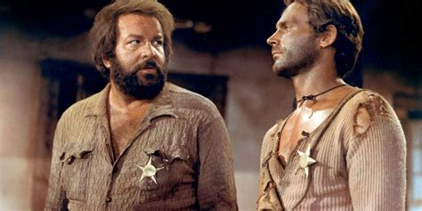

Bud Spencer
Bud Spencer was born in Naples, Italy on 31st October 1929 as Carlo Pedersoli. He was an Italian actor, professional swimmer and water polo player. He was know for playing in action-comedy and spaghetti westerns roles, sometimes with his long-time partner and friend Terence Hill. The duo garnered world acclaim. Spencer and Hill appeared in 18 films together.

In his youth, he was a successful athlete and swimmer for the Gruppo Sportivo Fiamme Oro. He gained a law degree and registered several patents. Spencer was also a certified commerercial airline and helicopter pilot. He was born as Carlo Pedersoli on 31st October, 1929 in Santa Lucia, Italy. He played lots of sports and showed an aptitude for swimming, winning several prizes.
In 1967 film director Giuseppe Colizzi offered him a role in God Forgives... I dont. On the set Pedersoli met Mario Girotti aka Terence Hill. This was the moment they became a film duo. The film director asked the two actors to change their names, deeming them to be too italian-sounding for a Western movie. Pedersoli chose Bud Spencer, with Bud inspired by his favourite beer, Budweiser and Spencer after the actor Spencer Tracy. Overall, between 1967 and 1994, Spencer and Hill made 18 films together. Many of these have alternative titles and their voices were dubbed and sometimes the films edited for Europe and other parts of the world.
Bud Spencer died aged 86 on 27 June 2016 in Rome. His son said he died without pain and in the presence of his family. He was buried at the Campo Verano cemetery in Rome
Website designed by Martin Folger 2023.